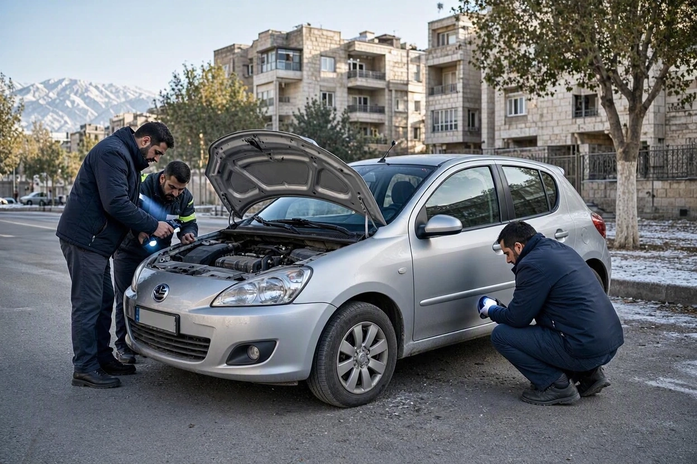
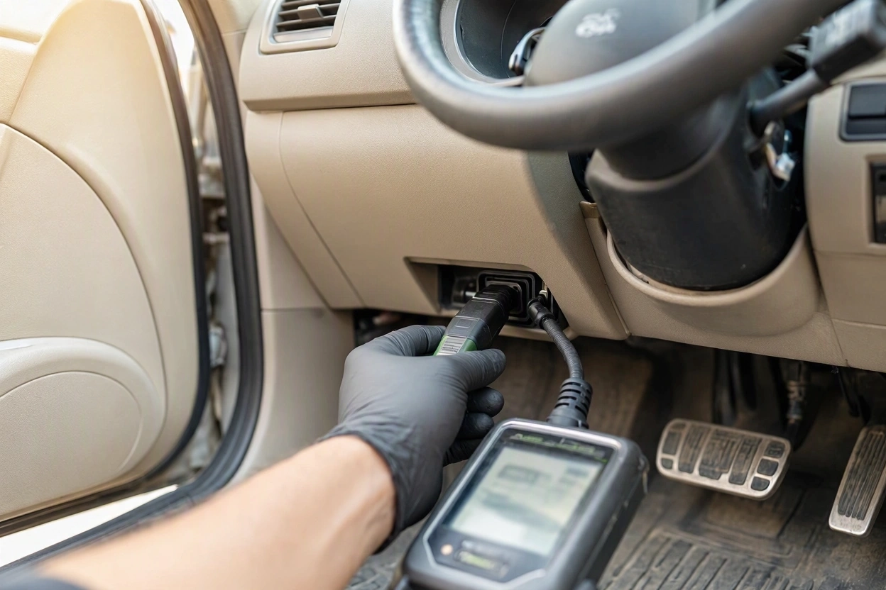
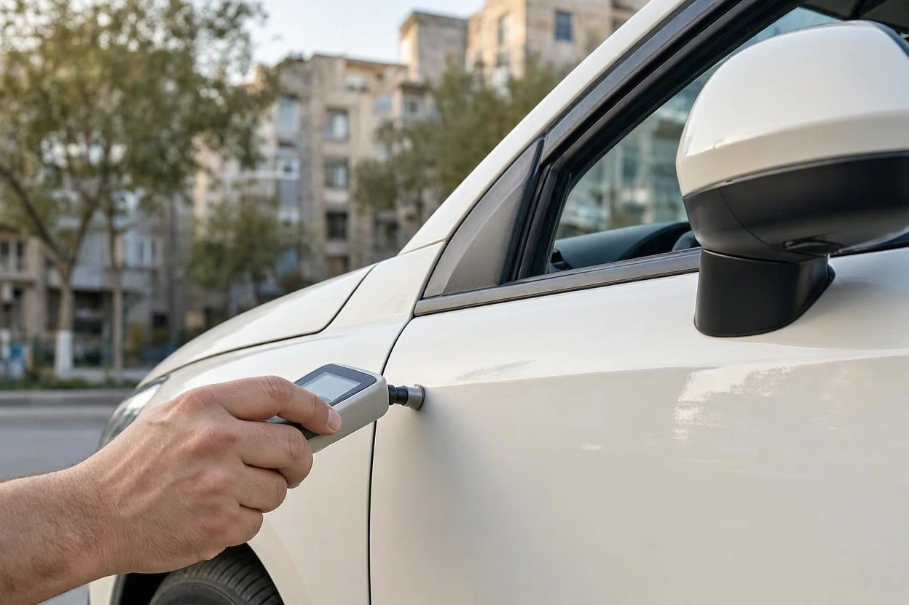
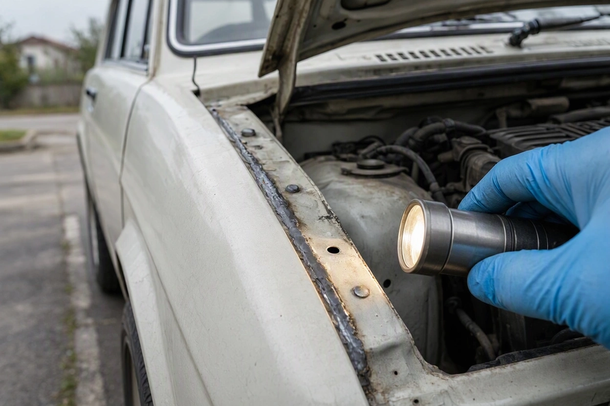
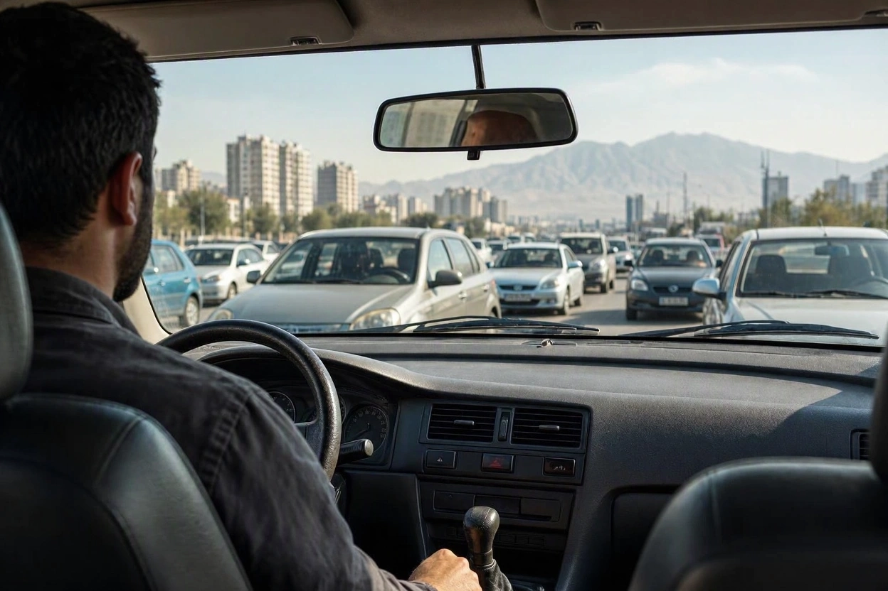

کارشناس فنی خودرو در تهران؛ فرق کارشناس فنی، رنگ و شاسی
فروشنده یک دنای پلاس در پونک گفته «خودرو کارشناسی رنگ شده و بیرنگ است». برگهی ضخامتسنج را هم نشانتان میدهد. اما هنگام تست، دندهها کمی دیر جا میافتند و دمای موتور در ترافیک همت بالاتر از انتظار میرود. برگهی بیرنگ درست است، فقط به سؤال شما جواب نمیدهد.
خیلی از خریدارها «کارشناسی» را یک کار واحد میدانند، در حالی که کارشناس فنی خودرو در تهران، کارشناس رنگ و بدنه و کسی که شاسی را بررسی میکند، هر کدام به بخش متفاوتی از خودرو نگاه میکنند. در این راهنمای کارشناسی کارماچک توضیح میدهیم هر کدام چه چیزی را میسنجد، چه چیزی را نمیبیند و برای معاملهی شما کدام ترکیب منطقی است.
کارشناس فنی خودرو سلامت مکانیکی و برقی را بررسی میکند: موتور، گیربکس، جلوبندی، ترمز و دیاگ. کارشناس رنگ با ضخامتسنج و چشم، رنگشدگی، بتونه و قطعهی تعویضی بدنه را پیدا میکند. بررسی شاسی سراغ اسکلت خودرو میرود: سینیها، ستونها، کف و درزها. برای خرید دستدوم در تهران، معمولاً هر سه لازم است، چون هیچکدام جای دیگری را نمیگیرد.
خلاصه در یک دقیقه
- برگهی کارشناسی رنگ دربارهی موتور و گیربکس هیچ چیزی نمیگوید و برعکس.
- شاسی ممکن است ضربه خورده باشد در حالی که رنگ بدنه تقریباً سالم دیده میشود.
- کارشناس فنی برای تشخیص درست به تست رانندگی و دیاگ نیاز دارد، نه فقط باز کردن کاپوت.
- ترافیک سنگین تهران روی گیربکس، کلاچ، ترمز و سیستم خنککاری فشار بیشتری میآورد و تست باید این شرایط را هم ببیند.
- پیش از رزرو، بپرسید دقیقاً کدام بخشها در گزارش میآید.
فرق کارشناس فنی، رنگ و شاسی در یک نگاه
سادهترین راه برای فهم تفاوت این است که هر تخصص به یک سؤال مشخص جواب میدهد. کارشناسی فنی میپرسد «خودرو درست کار میکند؟». کارشناسی رنگ میپرسد «بدنه چه دستکاریای دیده؟». بررسی شاسی میپرسد «اسکلت خودرو هنوز سالم و همراستاست؟».
| نوع بررسی | چه بخشهایی | ابزار اصلی | چه چیزی را نشان نمیدهد |
|---|---|---|---|
| کارشناسی فنی | موتور، گیربکس، کلاچ، جلوبندی، فرمان، ترمز، برق خودرو | دستگاه دیاگ، تست رانندگی، بازدید چشمی و شنیداری | رنگشدگی، بتونه و سابقهی تصادف بدنه |
| کارشناسی رنگ و بدنه | تکتک قطعات بیرونی بدنه، سقف، شیشهها | ضخامتسنج رنگ، نور، بررسی درز و پیچها | سلامت موتور و گیربکس، ضربهی پنهان در اسکلت |
| بررسی شاسی | شاسیهای جلو و عقب، سینیها، ستونها، کف صندوق و کف خودرو | بازدید از زیر خودرو، چراغقوه، بررسی جوش و چسب کارخانه | عملکرد مکانیکی، رنگشدگی قطعات بیرونی |
در عمل، بررسی شاسی معمولاً بخشی از کارشناسی بدنه است، نه یک خدمت کاملاً جدا. اما همهی مجموعهها آن را در «کارشناسی رنگ» حساب نمیکنند. همین تفاوت تعریف، منشأ بیشتر سوءتفاهمهاست.
کارشناس فنی خودرو دقیقا چه چیزی را بررسی می کند؟
کارشناس فنی خودرو وضعیت قطعات متحرک و سیستمهای الکترونیکی را میسنجد. موتور از نظر صدا، نشتی روغن، دود اگزوز، کمپرس و دمای کارکرد بررسی میشود. گیربکس دستی از نظر جا افتادن دندهها و صدای کلاچ، و گیربکس اتوماتیک از نظر ضربه هنگام تعویض دنده و تأخیر در حرکت دیده میشود.

بخش مهم دیگر، جلوبندی و ترمز است. لقی سیبکها، خرابی کمکفنرها و تابیدگی دیسک ترمز معمولاً فقط در حرکت خودشان را نشان میدهند. به همین دلیل کارشناسی فنی بدون تست رانندگی ناقص است. اگر میخواهید فهرست کامل این بخشها را ببینید، در مطلب بخش های کارشناسی فنی خودرو هر قسمت جداگانه توضیح داده شده است.
کارشناس رنگ چه چیزی را می سنجد و کجا متوقف می شود؟
کارشناس رنگ ضخامت لایهی رنگ را روی هر قطعه اندازه میگیرد و با بقیهی قطعات مقایسه میکند. رنگشدگی، لکهگیری، بتونه و قطعهی تعویضی با همین مقایسه پیدا میشوند. پیچهای گلگیر و درها، چسب کارخانهای درزها و تاریخ شیشهها هم سرنخهای تکمیلی هستند.

محدودیت کارشناسی رنگ اینجاست: قطعهای که درست تعویض شده و رنگ کارخانهای دارد، گاهی با ضخامتسنج تشخیص داده نمیشود و باید سراغ پیچ و درز رفت. از طرف دیگر، کارشناس رنگ دربارهی موتور، گیربکس یا جلوبندی نظری نمیدهد. برگهی «بیرنگ» یعنی بدنه دستکاری نشده، نه اینکه خودرو سالم است.
چرا بررسی شاسی کاری جدا از کارشناسی رنگ است؟
شاسی و سینیها زیر قطعات بیرونی پنهان هستند. در یک تصادف از جلو، ممکن است گلگیر و سپر عوض شوند و رنگ کارخانهای داشته باشند، اما سینی جلو یا سر شاسی کشیده و جوش داده شده باشد. ضخامتسنج روی سپر و گلگیر چیز مشکوکی نشان نمیدهد، ولی ساختار خودرو دیگر مثل روز اول نیست.

ضربهی شاسی هم روی ایمنی اثر دارد و هم روی ارزش خودرو. خودرویی که شاسی آن ضربه خورده ممکن است در جاده به یک سمت بکشد، لاستیکها را نامنظم بخورد و در فروش بعدی با افت قیمت جدی روبهرو شود. نشانههای دقیقتر را در راهنمای تشخیص شاسی ضربه خورده خودرو آوردهایم.
پیش از معامله، هر سه بخش را بررسی کنید
اگر نمیدانید خودرو فقط رنگ دارد یا مشکل فنی و شاسی هم دارد، یک بررسی همزمان فنی و بدنه ابهامهای معامله را کمتر میکند.
ثبت درخواست کارشناسیبرای خودروی شما کدام کارشناسی لازم است؟
نوع کارشناسی را وضعیت خودرو و نوع معامله تعیین میکند. این چند موقعیت رایج کمک میکند تصمیم بگیرید:
- خرید دستدوم معمولی: کارشناسی فنی همراه با رنگ و شاسی. صرفهجویی در یکی از این سه، معمولاً همان جایی است که ایراد پنهان مانده.
- خودرو با گیربکس اتوماتیک یا CVT: کارشناسی فنی با تست رانندگی طولانیتر و دیاگ گیربکس اولویت دارد، چون تعمیر این گیربکسها معمولاً پرهزینه است.
- قیمت پایینتر از عرف بازار: بررسی شاسی و بدنه را جدی بگیرید. ارزانی بیدلیل اغلب به سابقهی تصادف برمیگردد.
- خودروی صفر یا کمکارکرد: کارشناسی رنگ و بدنه مهمتر است، چون آسیب حمل یا پارکینگ ممکن است پیش از تحویل ترمیم شده باشد.
- فروش خودروی خودتان: یک گزارش کامل کمک میکند قیمت را مستند اعلام کنید و چانهزنی بر اساس حدس نباشد.
اگر میخواهید بدانید ایرادهای پیدا شده چه اثری روی ارزش معامله دارند، بعد از کارشناسی سری به قیمت گذاری خودرو بزنید تا تصویر واقعبینانهتری از قیمت داشته باشید.
کارشناسی فنی خودرو در تهران چه نکته هایی دارد؟
شرایط رانندگی در تهران روی بعضی قطعات فشار بیشتری میآورد و کارشناس فنی باید این را در نظر بگیرد. ترافیک توقف و حرکت، کلاچ و گیربکس را زودتر فرسوده میکند. ماندن طولانی در ترافیک تابستان، سیستم خنککاری را امتحان میکند. دستاندازها و چالههای خیابانهای قدیمیتر هم به جلوبندی فشار میآورند.

- مسیر تست را ترکیبی انتخاب کنید:چند دقیقه ترافیک سنگین برای دیدن رفتار گیربکس و دمای موتور، و یک مسیر روان برای سنجش لرزش فرمان و ترمز در سرعت بالاتر.
- زمان بازدید را در روز بگذارید:نور روز برای دیدن اختلاف رنگ و موج بدنه بسیار بهتر از نور پارکینگ یا شب است.
- محل را خودتان تعیین کنید:اگر فروشنده فقط در یک تعمیرگاه یا مکان خاص اجازهی بررسی میدهد، این را یک نشانهی احتیاط در نظر بگیرید.
- گزارش کتبی بخواهید:گزارشی که بخش فنی، رنگ و شاسی را جدا نوشته باشد، در مذاکره و قولنامه قابل استناد است.
کارشناسی در محل در تهران رایج است و برای خودروهایی که در پارکینگ یا خیابان فروشنده هستند، رفتوآمد را کم میکند. فقط مطمئن شوید کارشناسی فنی و بدنه خودرو در محل هم شامل تست رانندگی و دیاگ میشود و به یک بازدید سریع بدنه محدود نمیماند.
اشتباه های رایج خریدارها در انتخاب نوع کارشناسی
- اعتماد به برگهی بیرنگ و چشمپوشی از بررسی فنی، به این امید که «خودروی بیرنگ حتماً سالم است».
- سپردن کارشناسی فنی به تعمیرکار آشنای فروشنده. استقلال کارشناس به اندازهی مهارتش اهمیت دارد.
- کافی دانستن دیاگ. خیلی از ایرادهای مکانیکی کد خطا ثبت نمیکنند.
- نادیده گرفتن زیر خودرو و کف صندوق، چون «رنگ بیرون سالم بود».
- قبول کارشناسی در پارکینگ تاریک یا زیر باران که دقت بررسی بدنه را پایین میآورد.
کارماچک در این سه بخش چه می کند؟
کارماچک یک ارائهدهندهی خدمات کارشناسی خودرو در تهران است که بررسی فنی، رنگ و بدنه و شاسی را در یک گزارش کنار هم قرار میدهد. ما فقط ایراد خودرو را شناسایی نمیکنیم؛ اثر آن روی هزینه تعمیر و ارزش واقعی معامله را هم مشخص میکنیم.
جمع بندی
کارشناس فنی خودرو در تهران، کارشناس رنگ و کسی که شاسی را بررسی میکند، سه سؤال متفاوت را جواب میدهند. برگهی بیرنگ دربارهی گیربکس چیزی نمیگوید، دیاگ سالم دربارهی سینی جلو حرفی نمیزند و رنگ کارخانهای هم تضمین نمیکند شاسی دست نخورده باشد. برای خرید دستدوم، بررسی همزمان هر سه بخش منطقیترین انتخاب است و اگر به دلیلی فقط یکی را انتخاب میکنید، بدانید کدام بخش را بررسی نکردهاید.
کارشناسی کامل خودرو را رزرو کنید
اگر خودرویی را در تهران زیر نظر دارید، پیش از قولنامه وضعیت فنی، رنگ و شاسی آن را با یک گزارش مستقل روشن کنید.
رزرو کارشناسی خودروسؤالات متداول
آیا کارشناسی رنگ، کارشناسی فنی را هم شامل میشود؟
خیر. کارشناسی رنگ فقط بدنه را از نظر رنگشدگی، بتونه و قطعهی تعویضی بررسی میکند. وضعیت موتور، گیربکس، جلوبندی و سیستم برق در کارشناسی فنی دیده میشود. اگر مجموعهای هر دو را با هم انجام میدهد، باید در گزارش دو بخش جدا داشته باشد.
بررسی شاسی جزو کارشناسی رنگ است یا فنی؟
بررسی شاسی معمولاً در دستهی کارشناسی بدنه قرار میگیرد، اما همهی مجموعهها آن را در «کارشناسی رنگ» حساب نمیکنند. پیش از رزرو بپرسید آیا شاسیها، سینیها، ستونها و کف صندوق هم بررسی و در گزارش ثبت میشوند یا فقط ضخامت رنگ قطعات بیرونی اندازهگیری میشود.
اگر خودرو بیرنگ باشد، باز هم بررسی شاسی لازم است؟
بله، بهتر است انجام شود. قطعات بیرونی ممکن است با قطعهی نو و رنگ کارخانهای تعویض شده باشند و ضخامتسنج اختلافی نشان ندهد، در حالی که سینی یا سر شاسی ترمیم شده است. بررسی جوشها، چسب درزها و پیچ قطعات این موارد را آشکارتر میکند.
دیاگ خودرو جای کارشناسی فنی را میگیرد؟
خیر. دیاگ خطاهای ثبتشده در سیستم الکترونیکی را میخواند، اما بسیاری از ایرادهای مکانیکی مثل لقی جلوبندی، فرسودگی کلاچ یا صدای موتور کد خطا ثبت نمیکنند. دیاگ یکی از ابزارهای کارشناس فنی است و در کنار تست رانندگی و بازدید چشمی معنا پیدا میکند.
کارشناسی فنی خودرو در تهران چقدر زمان میبرد؟
زمان دقیق به نوع خودرو، دامنهی بررسی و مسیر تست رانندگی بستگی دارد. کارشناسی کامل که فنی، رنگ و شاسی را با هم پوشش میدهد، طبیعتاً از بررسی فقط رنگ بیشتر طول میکشد. در تهران، ترافیک مسیر تست هم روی زمان اثر دارد. زمان تقریبی را هنگام رزرو بپرسید.
برای فروش خودرو هم کارشناسی فنی و شاسی لازم است؟
الزامی نیست، اما مفید است. گزارش مستقل که فنی، رنگ و شاسی را جدا نوشته باشد، به خریدار اعتماد میدهد و قیمت پیشنهادی شما را مستند میکند. اگر ایرادی وجود داشته باشد هم پیش از آگهی متوجه میشوید و میتوانید دربارهی تعمیر یا اعلام آن تصمیم بگیرید.